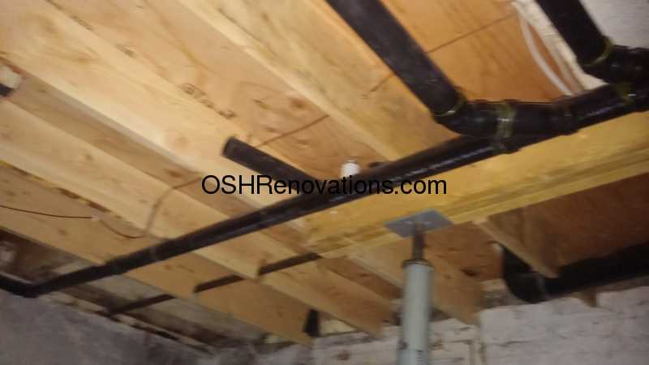
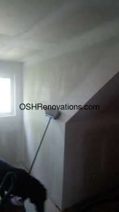
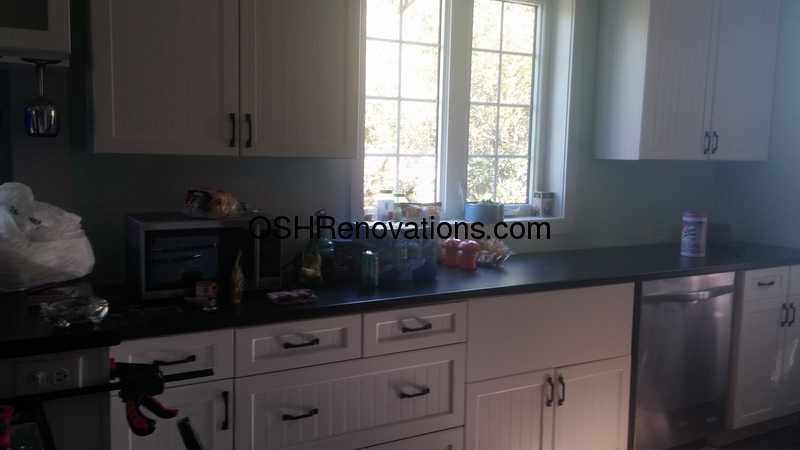
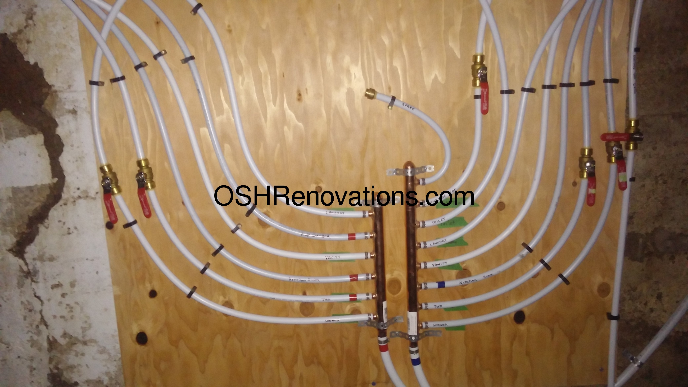
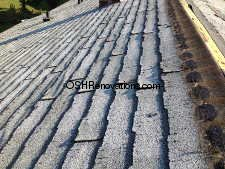
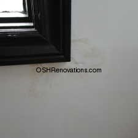

What can we do for you?
|  |
Carpentry From structural to finishing, carpentry is the basic element to addressing any home issues. Whether it's re-inforcing under a bathroom floor (as pictured) or building cabinets, carpentry know-how and experience lead to a finely finished product. |
|
Insulation Understanding air and vapour barriers and how they work is crucial to any part of a building that is exposed to the weather. Having the correct amount of the right kind of insulation in the right places can prevent a lot of problems from occuring. |
|
|  |
Drywall We do drywall. We do it better than most with the least amount of mess. From boarding to primer-ready, professional results at reasonable rate. Drywall takes at least 5 visits to complete, ready for primer and paint. For this reason, a flat rate per job is provided. For larger or more intricate drywall jobs, I have an expert available. For your money, you couldn't find a better man to finish your living space. |
|
Paint With a good eye and attention to detail, as well as a practiced understanding of various paints, you will get the paint job you're looking for. Paint also may require multiple trips to finish, and is also billed at a flat rate per job. |
|
|  |
Cabinetry Ordering cabinets from a large scale manufacturer takes months. For the same price, get the cabinets you want built as soon as they're ordered. Not everyone can build cabinets. Using a computer-assisted drawing program, I am able to configure and build custom cabinets using better materials. I can build much faster, and a lot less expensive than the big name manufacturers. I am also not married into one particular supplier of hardware, so there are vastly more options available for less than what our competitors can do for a better price. |
|
Electrical It's a good idea to have your electical looked at. A quick exam and you can have a good idea of the state of your residential electrical system. This outlet was in a garage where there was wood-working being done as a hobby. Very fine, airborne sawdust crept into and settled in the electrical outlet boxes. One spark... The fix was quick and low-cost, and prevents this fire hazard from happening again. A lot of the electrical work entails fixing the past mistakes of others who should have probably not attempted home wiring projects without more information, post-inspection, or both. Just because it works doesn't mean it's safe. Correcting these issues is expensive. Not correcting them is even more expensive. Insurance companies will look for reasons to deny your claim. Faulty wiring is not necessarily covered, and could be used to deny your claim altogether. If wiring is done according to code, or better, then electrial never becomes an insurance issue. Win / win situation. |
|
|  |
Plumbing Ask for an estimate and get back to me. For less than that estimate, I do a better job. For example, the picture is of a manifold system that I installed after a plumber visit to have the home water ready didn't suggest this beneficial option to the homeowner.
The plumber added into the existing copper lines with more outputs than the system should have been expected to handle.
We are not a commercial roofing company; we are your renovators and we care about the quality of the work done to your home, either by ourself or others. |
|  |
Roofing We can do roofing, but only if you want it done right. Stripping the old covering, inspecting the sheathing and supporting structure, calculating ventilation needs and providing solutions. We can also direct 3rd party roofing companies to install according to your specific needs. We are not a commercial roofing company; we are your renovators and we care about the quality of the work done to your home, either by ourself or others. |
|  |
Mold and Mildew Solutions There is no budget for mold and mildew. Knowing this, mold remediation companies will charge upwards of $1,000 just to find the source; and up to $10,000 or more to fix the problem. For that same $10,000 I am on-site full time for 2 months or more. The mold has been fixed, the plumbing and electrical are all working better than ever. Drywall, trim and paint are all complete, and you have a great new space that is warm, dry and comfy. Your home is your greatest investment, and it should be treated as such. |